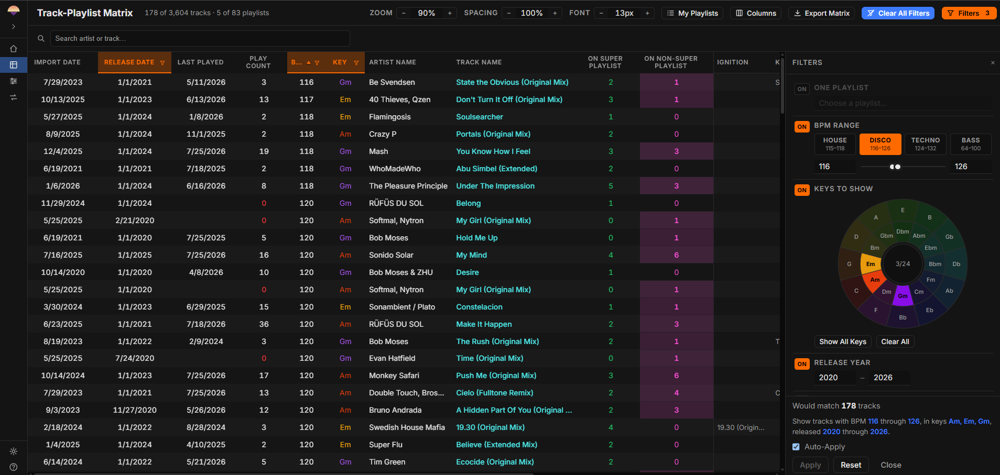
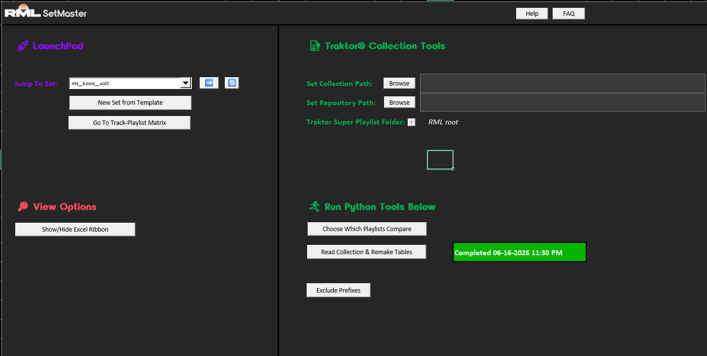
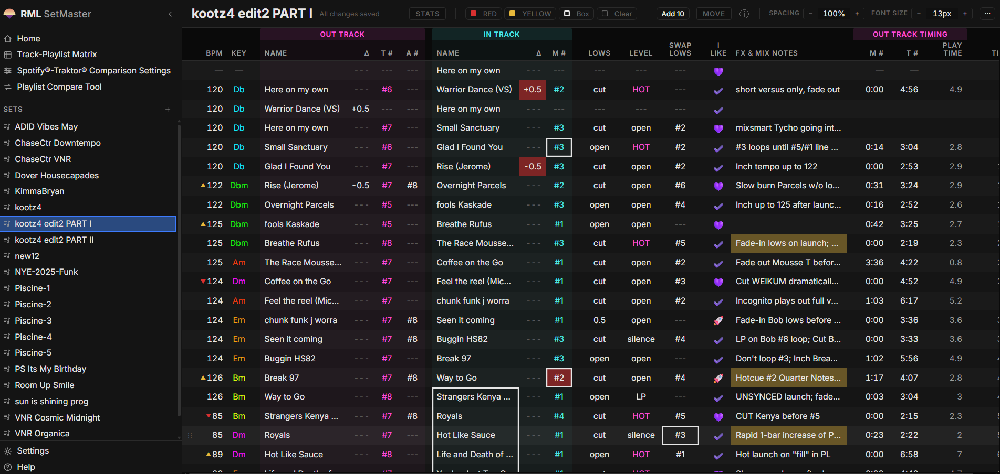

SetMaster 3: From a Spreadsheet on a Plane to a Robust Application
Data engineering meets DJ engineering. I needed a road-worthy set preparation tool, so I built one three times in three years. The third is a specified, tested, offline web application that any DJ can download and run on their own machine.
- 25 daysSpecification to public release
- 93 issuesAcross five build rounds
- 897 testsAutomated, passing
- Byte-identicalPipeline port, verified on real data

The Tedious Part
I keep about 7,000 tracks in Traktor®, drawn from a personal music library many times that size. I also perform with DJ partners, so some of their catalog sits on my machine as well.
Preparing a set inside Traktor® or Rekordbox® alone was slow. The slow part was never the mixing. It was the searching, the filtering, the sorting, and the cross-checking against sets I had already played, so that I did not put the same track in front of the same listeners too often. Staying fresh is part of the job.
There was a second version of the same problem. I maintain Spotify® playlists on the go, and those playlists are a record of what I have actually been listening to and want to play. Reconciling them against what I own in Traktor® was manual work every time.
Streaming was supposed to make this easier. It made it larger. When access replaces ownership the library grows, and organizing a larger library is more work, not less.
The problem was not that I had too little music. The problem was that I could not get from an idea in my head to the tracks that fit it fast enough.
I am a data engineer. I kept seeing the automation.
One Row Is One Transition
The first version was a Google Sheet, built in 2023. I chose Google Sheets for one reason, which was cross-device backup without any work on my part. It moved to Excel later.
I used it in professional settings immediately. It was never a side project that became serious. It went straight into paid work, which is why the logic inside it survived two rewrites without changing.
The idea that everything else grew from is small. Traktor® and Rekordbox® present a set the way a playlist reads, top to bottom, one track per row. Notes attached to a track in that layout are hard to read and take up room that the track list needs.
So I gave a row a different job. One row is one transition. The track I am coming from on the left, the track I am going into on the right, and everything about the move between them in the columns in the middle.
| Out Track | In Track | ||||||
|---|---|---|---|---|---|---|---|
| Track | T # | Lows | Level | Track | M # | BPM | Key |
| Nightdrive | 3 | OUT | HOT | Cosmic Dub | 2 | 122 | Gbm |
| Cosmic Dub | 4 | SWAP | MID | Late Transmission | 1 | 124 | Dbm |
- Magenta is where you are leaving
- Cyan is where you are landing
That is the part of a set that actually requires preparation. The track order is a list, and a list is easy. The transition is where the cue points, the level moves, the tempo changes, and the notes to myself live, and reading one left to right is how I think about it when I am standing behind the equipment.
A spreadsheet was the right container for the rest of it. Tracks move earlier and later while a set develops, you replace things, you add things, and you need somewhere to write down what you liked, what you did not, and where you left off. Copy, paste, drag, and white space between sections did all of that without my having to build any of it.
It grew. It became a multi-tab workbook that I added to on planes between gigs, and it grew a second view for performing: zoomed in, more room, color coded, so that a glance during a long set was enough to bring a rehearsed transition back.
The Catalog Becomes Data
The next version added a VBA and Python backend behind the workbook. That is SetMaster 2, and it is the point where the tool stopped being a spreadsheet.
It read my Traktor® collection into the workbook so that the catalog could be filtered like data instead of browsed like a folder. Compound filters against key and BPM, fast switching between them, artist search. I used it during set preparation and never during a performance, which kept the two activities separate and kept the tool honest about what it was for.
It took minutes off the tedious part, every session, for years.
One thing about SetMaster 2 is worth stating plainly, because it is still true of the current version. The catalog half and the set preparation half were never dependent on each other. The transition editor works with nothing loaded at all.

The Comparison That Changed the Tool
Then I built a one-off flow that took the Python output from SetMaster 2, imported CSV exports of my Spotify® playlists from exportify.net, and compared the two.
That is when the tool became something other than a faster spreadsheet. The comparison answers a question I had been answering by hand for years: of everything I have been listening to and actually want to play, which of it do I not own yet. The answer is a short list. I buy from the short list, and the tracks are in the next set.
It saved hours every month. That number is mine and it is not instrumented, so treat it as an estimate from the person who was doing the work before and after.
Lexicon deserves a mention here. Lexicon has a comparison tool and it is a strong one. It did not do the bulk list filtering I wanted, which is why I kept building, but this was never meant to compete with it. It is a different application of the same underlying idea, which is that a music catalog is metadata and metadata can be queried.

The Rebuild
I began building apps with Claude in early 2025, and that changed how I looked at the workbook. I did not get time to act on it until this year, and the web application version started in early July 2026.
There was also a defect that no amount of additions to the workbook was going to fix. The prototype's connection to Traktor® was Windows only. That was the single largest reason to rebuild rather than continue.
The Specification Came First
I gave Claude the prototype and all of the VBA, and we spent several days on planning documents before any application code existed. What came out of that is a complete specification package: an overview, a data model, a user interface specification, ten feature specifications, a decision log, and an open questions document closed to zero.
The instruction in the repository to the agent doing the build is one sentence. The specification is complete and decided, and the job is to implement it, not to re-litigate it.
That is the artifact I would point at first. The build was fast because the thinking was finished.
The Pipeline Was Ported, Not Rewritten
SetMaster 2's data engine carried years of accumulated fixes in its matching and normalization logic: track name cleaning, playlist name normalization, filename normalization, key mapping. Those fixes exist because real music metadata is inconsistent, and every one of them was a bug I hit and corrected while working.
The rule for the rebuild was that restructuring the stages was allowed and changing the matching behavior was not.
A rule like that is worth nothing unless it can be checked. So the ported pipeline is covered by golden-master tests that compare its output to the original engine's output on my real collection, byte for byte. Pandas is pinned and the CSV round trips between stages were kept specifically to preserve those bytes.
The result is not that the port is probably correct. The result is that the port produces the same bytes, and a change to the matching behavior fails the build.
The Constraints Were Decided Before the Code
Three constraints were fixed at specification time and are still fixed.
collection.nml is opened strictly read-only. SetMaster never
writes to it or to any other Native Instruments® file. That is stated in
the specification, restated in the interface, and checked with SHA-256
snapshots of the file.
The application is fully offline. A local backend process and a browser interface on localhost, with no cloud, no accounts, no telemetry, and no external API calls. Your library never leaves your machine because there is nowhere for it to go.
It is single user. There is no authentication and no multi-tenancy, and it was not architected for either.
Five Rounds, Ninety-Three Issues
Build one finished on 2026-07-07 and was tagged. After it came three hardening rounds against a real backlog: 26 issues, then 12, then 36. One issue, one branch, one pull request each.
Merging a fix does not close its issue in this repository. The issue stays open until I have verified it against my own data. The person who has to live with the tool is the one who decides whether it works, and that is a workflow rule, not a preference.
I was also out playing during those rounds, so the application was being used in live situations while it was being fixed.
A fifth round followed in August, and it has an unusual shape for this project: almost none of it is application code. It is the macOS installer, the generator that builds the public mirror, and two findings about what the artifacts actually contained. What was missing by then was never a feature. It was a way for a stranger to install this on a Mac.
The acceptance criteria were demonstrated against my real files rather than fixtures. The real collection loads at 6,810 tracks across 149 playlists. The digging workflow I use most, which finds curated tracks I have never put in a published set, returns 111 rows in a single pass. A note typed into a blank comparison cell survives a re-import and a full re-run of the pipeline, which is the behavior that makes the comparison worth annotating at all.
Packaging for People Without a Terminal
Before this existed the launchers assumed a developer checkout, which meant the first public release could not have started on a clean machine.
Each release is now a self-contained payload per operating system. Unpack it and double-click a launcher. No Python, no Node, no terminal.
The detail I would call out is small and it is the kind of thing that decides whether a release works. A virtual environment is not a portable runtime, because its configuration points at an absolute path to a base Python that will not exist on someone else's machine. So the payload ships a relocatable CPython with the locked dependencies installed into it, and the artifact smoke check fails the build if a developer virtual environment ever appears inside it.
The Mac Installer
The first version shipped for Windows only, which was the thing the rebuild was supposed to fix and the one thing it had not yet delivered. A month later it has. SetMaster now ships on macOS as a signed, notarized application inside a drag-to-Applications disk image. Open it, drag it, and open it from Applications like any other Mac app. There is no right-click-to-open, no trip through Privacy and Security, and no terminal.
Getting there was mostly signing. Apple's convenient option, signing the bundle with one recursive command, passes local verification and is then rejected at notarization. The bundled CPython carries dozens of nested binaries, mostly the numerical libraries, and every one has to be signed individually from the inside out before the outer bundle is sealed. The image is then notarized and stapled twice: once as the application, once as the image built from it.
Two findings in that round are the more interesting part, because they are the same shape. Each was a claim that was true of the thing measured and false of the thing shipped.
The first: compiled Python bytecode records the absolute path of the source it came from, and that path is what a user sees in a traceback. Nearly three thousand files in the macOS payload named my home directory, and the previous release had gone out that way. No source scan could have caught it, because those paths exist in no source tree; they are written at build time. The fix was a second gate in a different place, one that scans the finished artifact rather than the tree it came from.
The second: the application declared it would run on macOS 11, and the bundled numerical libraries required macOS 14. Someone on an older Mac could have installed it and never started it. The builder now walks every binary inside the image and refuses to build when anything needs more than the application claims. That is why the release says Apple silicon and macOS 14 or later, and why it does not say Intel.
Publishing a Private Repository Safely
The private repository contains my entire real Traktor® library as test data, tracked since the first commit. The public repository had to contain none of it.
Rewriting the history to remove it was considered and rejected. A history rewrite is one mistake away from a permanent leak, and a tree with no history has no leak surface at all. So the public repository is a generated mirror, rebuilt from scratch at each release, carrying no history and accepting no code back.
It has two defenses that do not share any logic. The first is an allowlist that decides what ships, because a denylist fails open and a file nobody thought about would go out. The second is a scanner that runs against the generated tree rather than the source, on the reasoning that the allowlist is the component most likely to have a bug, so the thing that catches a bad allowlist must not be built on it. It checks file sizes, forbidden paths, content patterns, and SHA-256 hashes against the known collection file.
Any finding aborts the build and deletes the output. There is no warn and continue mode. This is not theoretical. The first real run caught a machine path string inside an interface placeholder, which is exactly the class of thing that survives code review.
What Is Not Finished
Both platforms ship. Neither claim is wider than what was tested.
-
Untested
The end-to-end suite and the golden-master pipeline tests have never been run on macOS. They pass on Windows. The macOS artifact has its own acceptance check, which it passed on a fresh account on a clean machine, and that is a smaller claim than a green suite.
-
Unsupported
Intel Macs, and macOS 13 or earlier. The bundled numerical libraries ship for Apple silicon on macOS 14, so the application says so and the builder enforces it.
-
Deferred
Perform Mode, and the natural-language filter bar.
-
Planned
Rekordbox® collection import. No date on it.
I would rather publish that list than have someone find it.
What It Does Now
SetMaster 3 does two jobs.
The first is set preparation: a structured editor for writing out a set as transition rows, with track order, hot cue numbers, EQ and level moves, timing, and mix notes.
The second is catalog analysis: it reads a Traktor® collection strictly read-only, cross-references it against Spotify® playlists exported through Exportify, and finds the two gaps that matter, which are tracks I own but have not organized and tracks on my playlists that I do not own. It also runs compound filters and sorts across the whole collection that Traktor® itself does not offer.
The first job does not depend on the second. SetMaster 3 is fully usable with no collection ever loaded, and Traktor® is not a prerequisite for it. Set rows are typed by hand, and the only thing a loaded collection adds to the editor is name suggestions while typing.
Inside the editor the useful parts are the ones that came from using it: cell formatting I control, an emoji palette I can edit, validation lists I can rename, export to CSV, XLSX, and Markdown, and a mix timer that tells me how long each section runs and how long the whole mix is.
The framing that matters most is that it becomes the source of truth. I am not fighting Traktor® or Rekordbox® filtering to make a set. I am working in the place the set lives.

The Flight to Los Angeles
I was on a plane to Los Angeles to play that night, with Traktor® open and SetMaster next to it, digging through the catalog. The set was already prepared.
I found transitions I liked well enough to consider putting into a finished set on the day of the gig, which is not a small thing to do. SetMaster let me lock them in: the cue points, the moves, the notes about what to do and when. By the time we landed I was confident enough to play them.
That night, during the set, I switched over to SetMaster and read the notes I had written that afternoon on the plane.
That was SetMaster 2, and it is the moment I stopped thinking of it as a spreadsheet with color coding. Preparation and performance were the same document, six hours apart, and the notes were the thing that carried across.
Connect the idea in your head with the tracks that fit it, faster.
The current version does not have the dedicated performance view that the workbook grew. The set editor is there to switch to, and it works, and a proper Perform Mode is specified and waiting rather than built. That flight is the reason it is on the list instead of off it.
In my own words at the time, this is beyond a fancy spreadsheet with color coding. It actually improves the craft. Ryan Hickey
Teaching, and What Is Next
A set page is a legible artifact, and that has always suggested a second use to me. Not for beginners, but for intermediate DJs who already understand transitions and song composition, a written-out transition is a good way to learn how to cue a track and how to line up key, BPM, and cue points. A student can study one complex transition, or a group of them, at their own pace.
Rekordbox® collection import is planned. I do not have a date for it, and it is currently listed out of scope rather than in progress, which is what planned with no date honestly looks like.
SetMaster 3 was built as a portfolio piece for AI engineering work, and it is actively developed. It is also the tool I use to do my job.
Where to Find It
SetMaster 3 is free, MIT licensed, and available now for Windows and for Apple silicon Macs on macOS 14 or later. The source is public, and so is every release and every artifact.
The smallest next step is to download it and open it against your own collection. Or read the code: it is all public, including the matching heuristics and the read-only parser this piece describes.
If you are hiring for AI engineering, data platform, or technical operations work, the fastest way to talk about any of this is a call.
SetMaster 3 is independent fan software and is not affiliated with, endorsed by, or sponsored by Native Instruments®, Spotify®, or Exportify. Traktor® is a registered trademark of Native Instruments GmbH. Spotify® is a registered trademark of Spotify AB. Rekordbox® is a registered trademark of AlphaTheta Corporation.